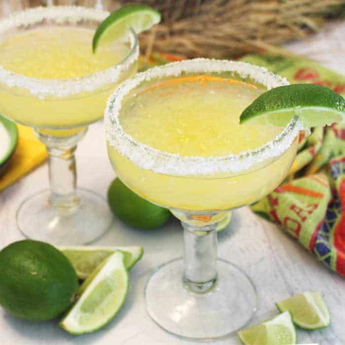

Margaritas

Description
A classic margarita cocktail drink served straight up or on the rocks, is one of the most popular cocktails of all time. And for good reason! It will cool you down on a hot day or warm you up on a cool day. Any day is a good day for a margarita.
If you plan to freeze lasagna, it's best to bake it in a foil pan. Allow it to cool completely, then tightly wrap the entire dish in storage wrap. Next, wrap it in at least one tight layer of aluminum foil. Freeze for up to three months. Thaw in the fridge overnight and reheat in the oven or microwave.
Allow the homemade lasagna to cool completely, then transfer the leftovers to an airtight container. Store in the refrigerator for up to four days. Reheat in the oven or in the microwave.
Ingredients
- 1 tablespoon kosher salt
- 1 ½ fluid ounces tequila
- 1 fluid ounce orange flavored liqueur (such as Cointreau®)
- ½ fluid ounce lime juice
- 1 lime wheel
Steps
- Step 1: Sprinkle salt on a small plate. Lightly wet the rim of a cocktail glass or margarita glass with a damp paper towel. Dip the moistened rim in salt to coat. Set aside.
- Step 2: Boil the lasagna noodles in lightly salted water until they're al dente.
- Step 3: Combine tequila, orange-flavored brandy, and lime juice in a cocktail shaker. Add ice and shake until chilled. Strain into a salt-rimmed cocktail glass or a salt-rimmed, ice-filled margarita glass. Garnish with a lime wheel.
- Step 4: Layer the ingredients according to the recipe (starting with sauce and ending with mozzarella) until the lasagna is assembled.
- Step 5: Cover with foil and bake in the preheated oven for about half an hour. Remove the foil and continue baking until the top is golden brown.